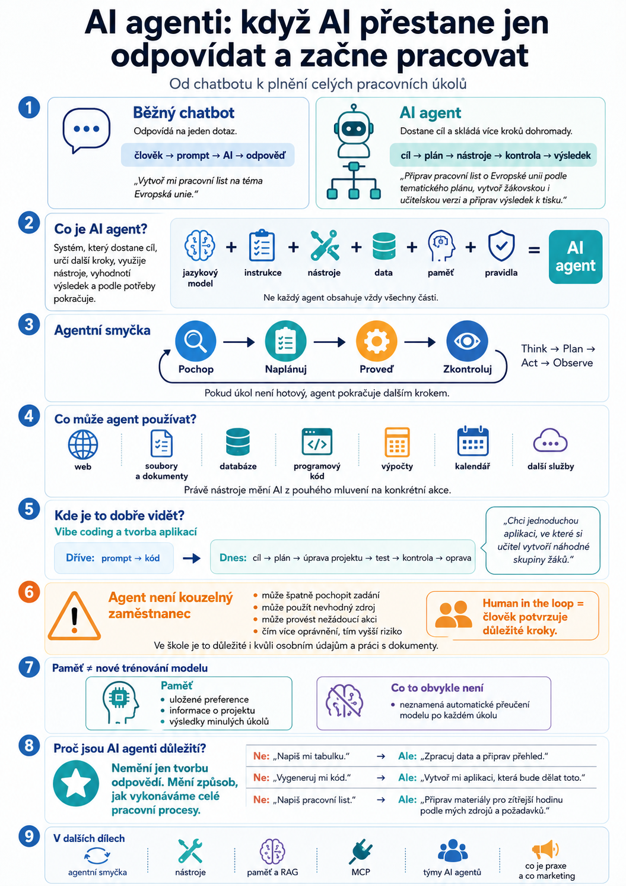
Co je AI agent?
Jednoduché vysvětlení rozdílu mezi chatbotem, AI nástrojem a agentem, který umí plánovat další kroky a pracovat s úkolem.
Číst článekAI ve výuce 2.0 · Studijní průvodce
Rozcestník článků o AI agentech: jak fungují, kde mohou pomoci při tvorbě a jak s nimi pracovat bezpečně ve škole.
AI agenti podle tématu
Články postupně doplní základní orientaci, agentní smyčku, práci s nástroji, paměť, RAG, MCP, multi-agentní systémy, coding agenty, školní praxi, návrh prvního agenta, praktické úkoly pro učitele, skills, celkovou agentní architekturu a bezpečné použití.
Nenašli jsme žádné články. Zkuste upravit hledaný výraz nebo filtr.

Jednoduché vysvětlení rozdílu mezi chatbotem, AI nástrojem a agentem, který umí plánovat další kroky a pracovat s úkolem.
Číst článek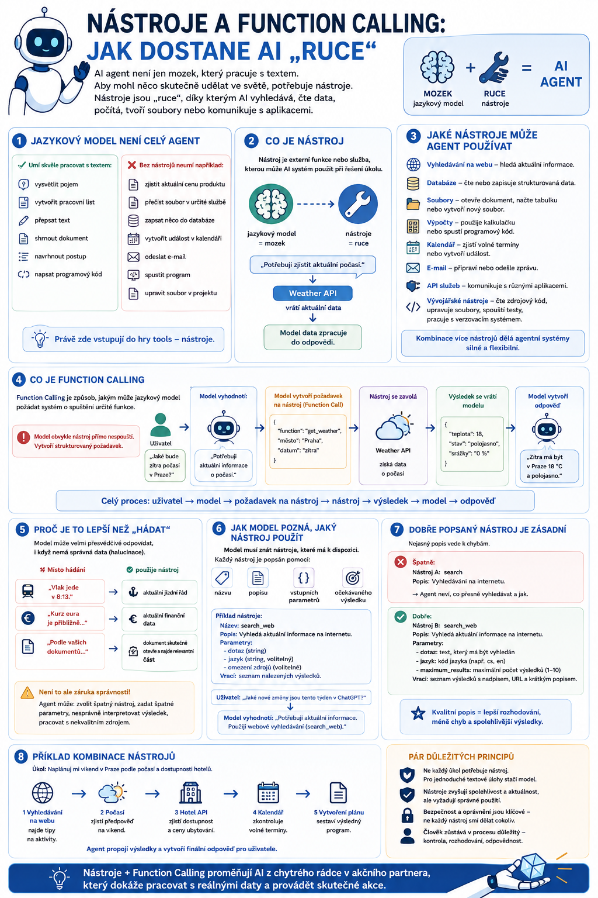
Jak jazykový model používá nástroje, pracuje s aktuálními daty a bezpečně provádí jednotlivé akce.
Číst článek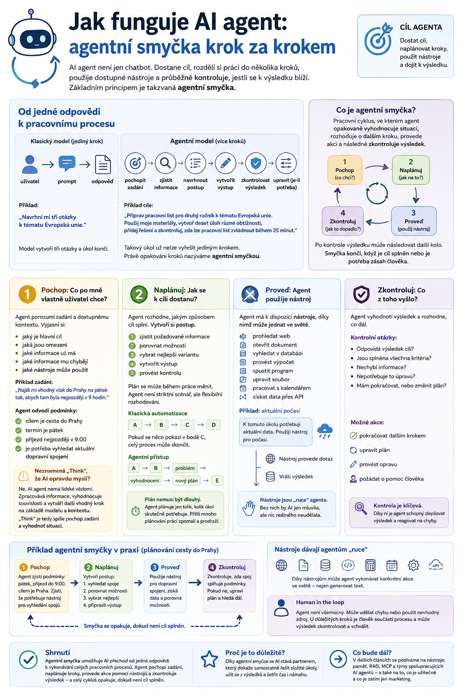
Jak agent pochopí cíl, naplánuje postup, použije nástroje, zkontroluje výsledek a podle potřeby pokračuje dalším krokem.
Číst článek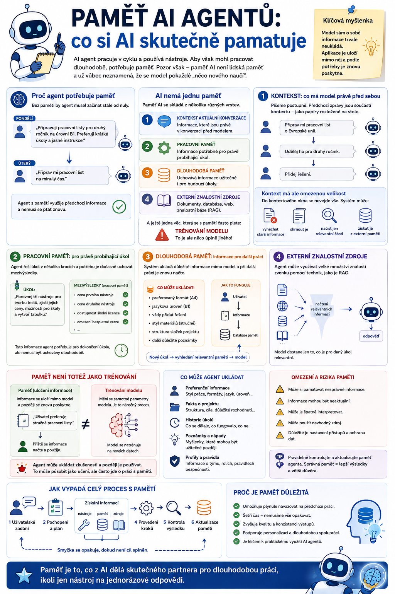
Co si AI skutečně pamatuje, jak se liší kontext, pracovní a dlouhodobá paměť od trénování modelu a proč záleží na aktuálnosti dat.
Číst článek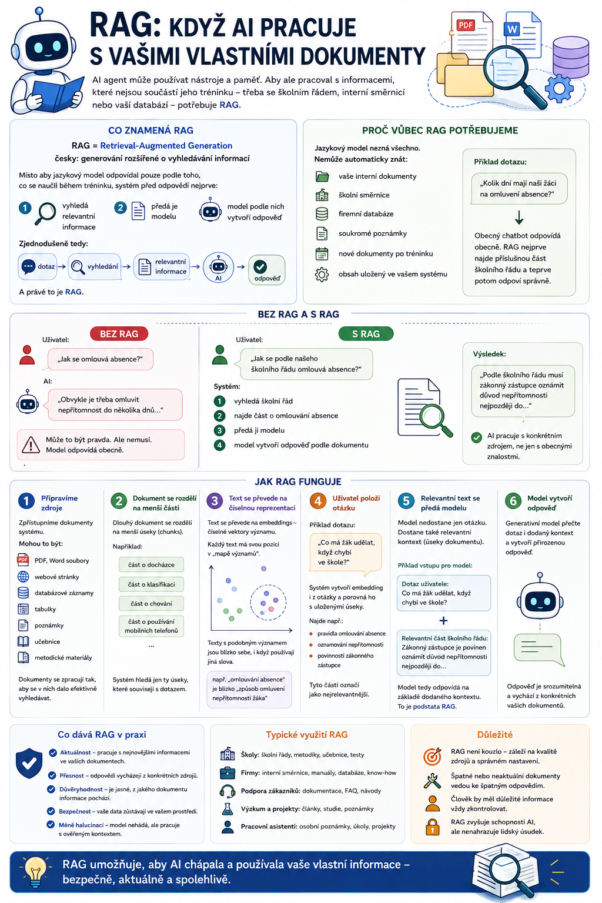
Jak AI vyhledá relevantní části vašich dokumentů a předá je modelu, aby odpovídal podle konkrétních zdrojů.
Číst článek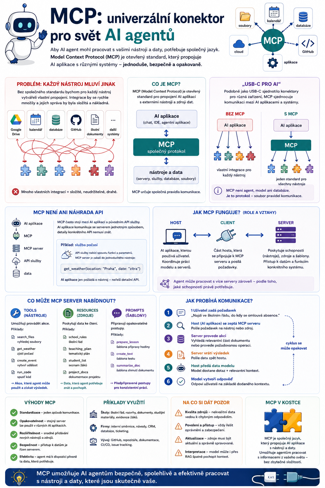
Jak otevřený standard propojuje AI aplikace s nástroji, databázemi a dalšími systémy a proč je důležitá bezpečnost.
Číst článek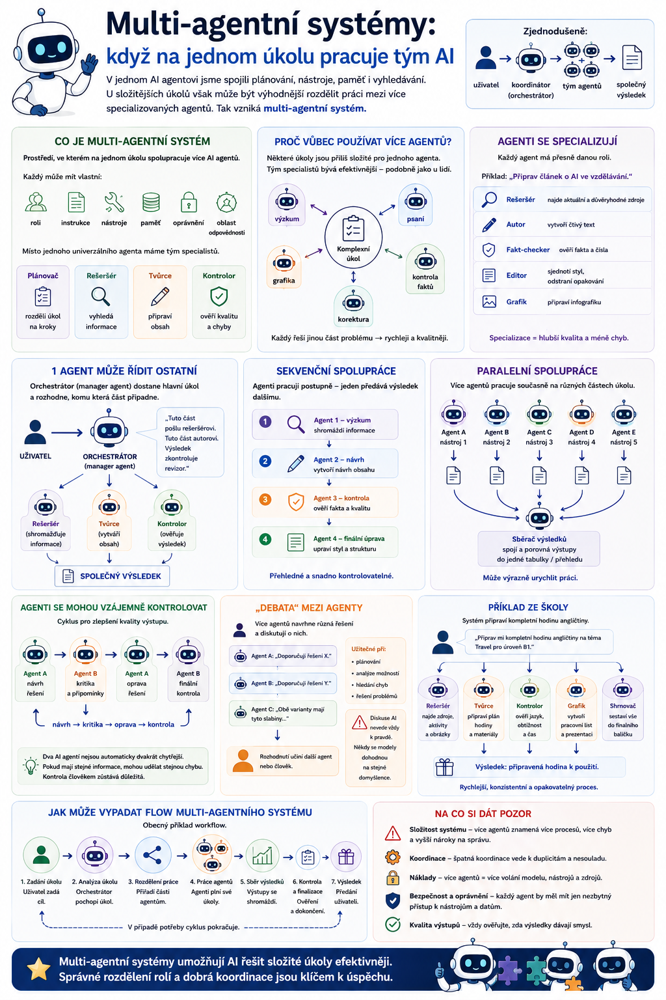
Jak si více specializovaných agentů může rozdělit role, spolupracovat na úkolu a proč více agentů neznamená automaticky lepší výsledek.
Číst článek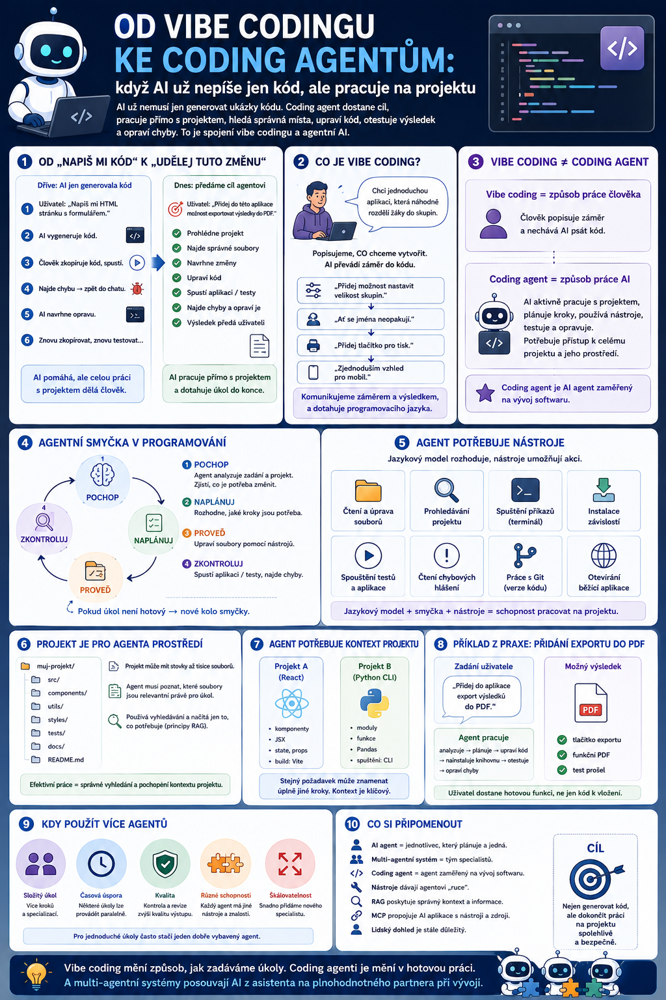
Jak AI přechází od psaní jednotlivých ukázek kódu k práci s celým projektem, testování a opravám.
Číst článek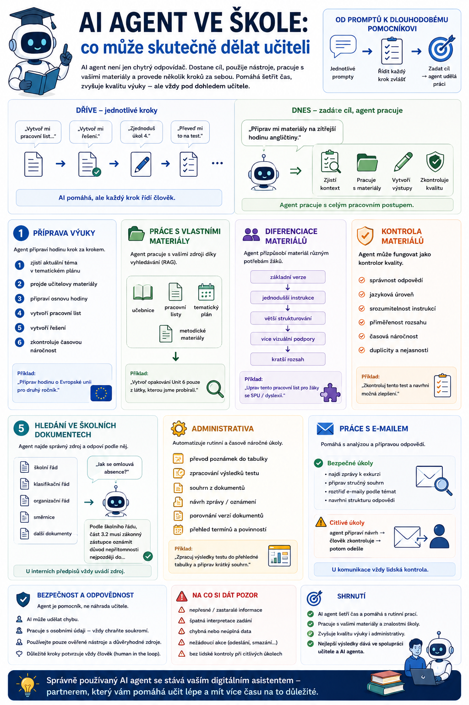
Co může AI agent skutečně dělat učiteli, kde pomáhá s přípravou a administrativou a kde musí zůstat člověk u rozhodování.
Číst článek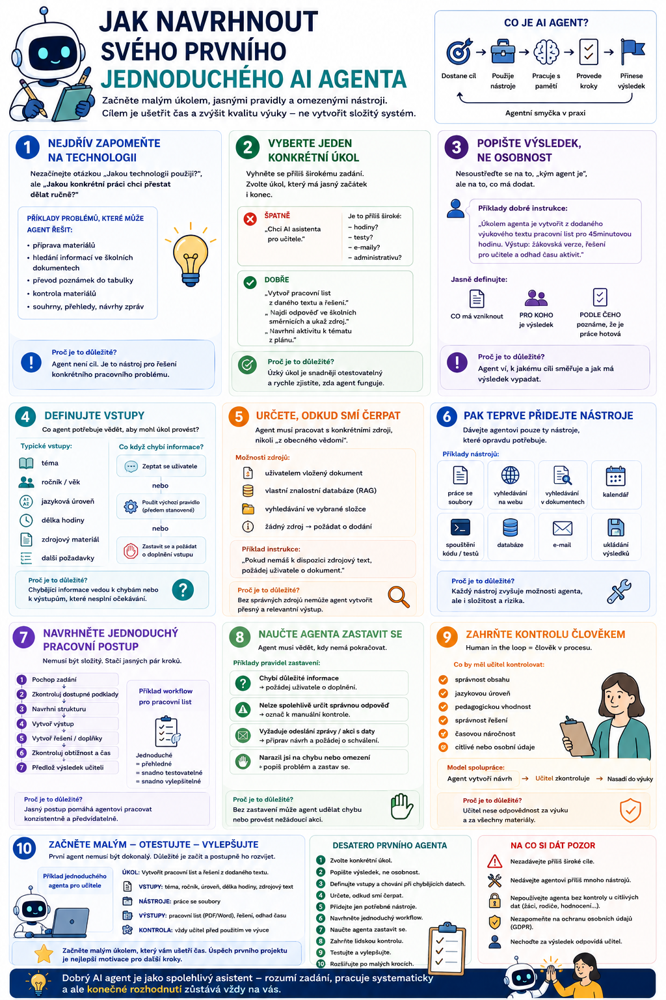
Praktický návod, jak začít jedním konkrétním úkolem, určit vstupy, zdroje, nástroje, kontrolu a bezpečné hranice.
Číst článek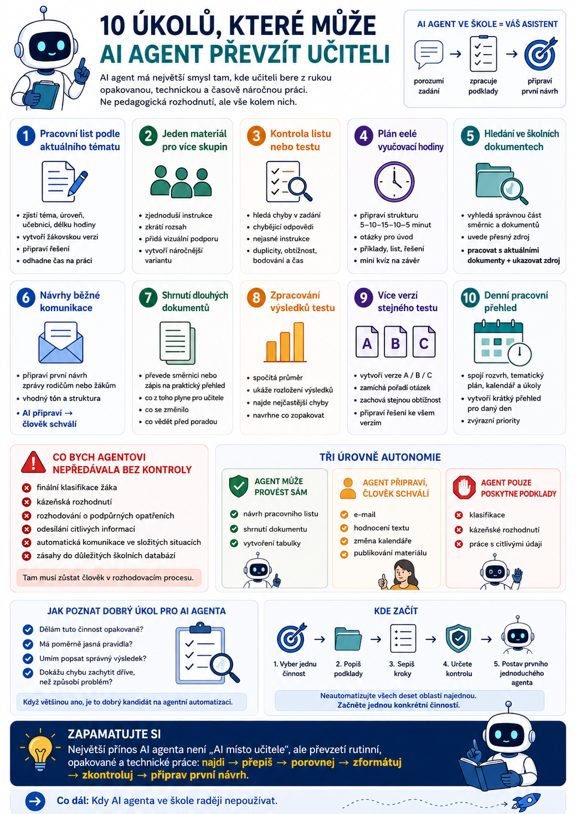
Praktický přehled činností, které může agent učiteli převzít nebo zjednodušit — od přípravy materiálů po analýzu výsledků a denní přehled.
Číst článek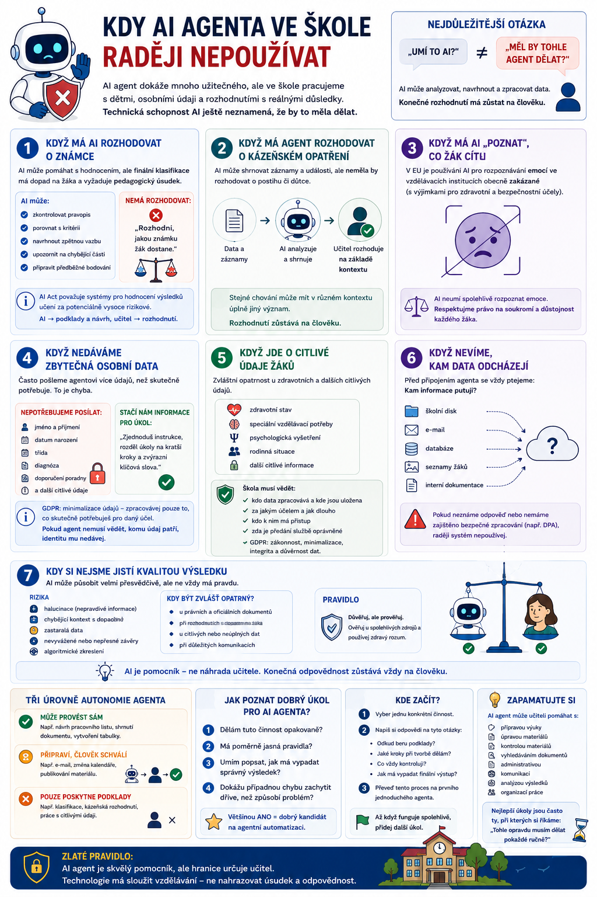
Kde končí užitečná automatizace: známky, kázeňská rozhodnutí, citlivá data, oprávnění, zastaralé zdroje a úkoly bez lidské kontroly.
Číst článek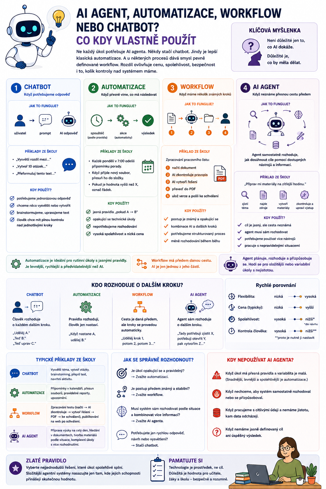
Jak vybrat správný typ řešení podle toho, zda potřebujete odpověď, pevné pravidlo, známý proces nebo rozhodování podle situace.
Číst článek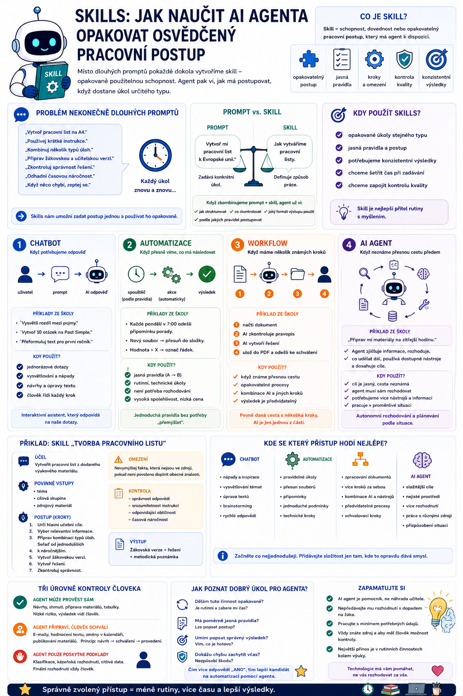
Jak uložit osvědčený pracovní postup jako opakovaně použitelnou schopnost a proč skill není jen další dlouhý prompt.
Číst článek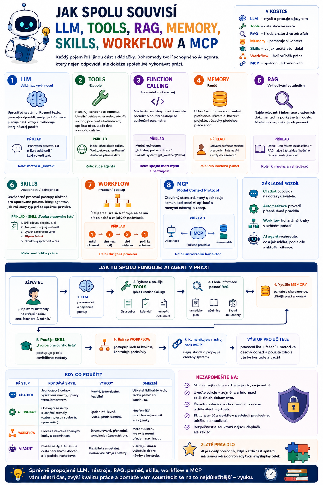
Jedna mapa pro LLM, tools, RAG, memory, skills, workflow, MCP a agenta — včetně příkladu, jak spolupracují při přípravě výuky.
Číst článek